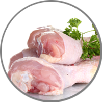
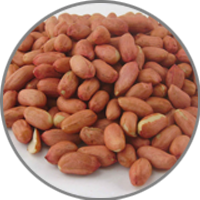
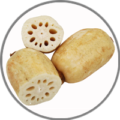
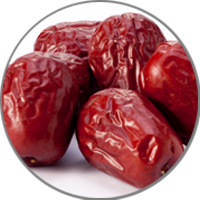

Lotus Root Soup

500 g
Chicken

100 g
RawPeanuts

600 g
Lotus root

30 g
Red dates

6 cups
Water
60 minutes
Medium
Reduce cholesterol
- First clean and cut meat into big pieces.Boil a pot of water and blanch the meat for about 5 minutes. Then rinse in water and set aside.
- Pre-soaked the raw peanuts in hot water for 30 minutes. Then remove peanut skin from the parboiled peanuts.Next, soften dried scallop by soaking in water for about 15 minutes.
- Hydrate a handful of dried goji berries in water till they've softened and become plump and juicy. Then drain and set aside.Use the back of a cleaver to flatten the red dates to help release more flavour. Rinse and set aside.
- Toast dried cuttlefish until fragrant and snip into smaller pieces. Then set aside.Right before you're ready to cook the soup, peel lotus root and cut it into big chunks about 1cm thick slices.
- Then peel the skin of the arrowroot and slice into thick pieces. And we're ready to boil the soup!I am using a pressure cooker to boil the soup. First, bring the water to a boil.
- Add the lotus roots and the rest of the other prepared ingredients.Add salt, to taste.
- Lock the lid in place and bring to pressure. Then lower heat and cook for 15 minutes. Allow pressure to drop and remove the lid. And we're done!Skim off any scum appearing on the surface and adjust seasoning before serving.